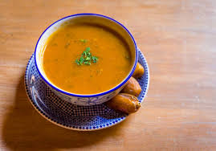

Bienvenue sur notre site de recettes Foodie.
Découvrez les riches saveurs de la cuisine marocaine en dévoilant des plats traditionnels du cœur du Maroc !
Offrez-vous la magie du Maroc avec notre service de recettes de plats marocains authentiques.
Plongez-vous dans la culture vibrante et les goûts exquis qui enchantent les amateurs de gastronomie du monde entier depuis des siècles
Notre service propose une collection organisée de recettes marocaines triées sur le volet qui mettent en valeur le talent artistique de la cuisine marocaine.
Des alléchants tajines regorgeant d'épices aromatiques aux somptueux plats de couscous qui incarnent à la fois tradition et innovation,
nos recettes capturent l'essence du patrimoine culinaire marocain.
Recettes populaires
Tajine
un plat conçu pour la cuisson lente qui garde les ingrédients tendres et humides pendant qu'ils mijotent
Couscous
représente un mélange simplement de deux plats principaux. Il s'agit de la semoule de blé cuite dans un couscoussier à la vapeur et d'un corps gras qui peut être soit du beurre ou généralement de l'huile d'olive.
Briouate
Un chausson feuilleté, généralement de forme triangulaire ou cylindrique.
Mrouzia
Un plat du Maroc constitué d'un tajine sucré-salé au mouton ou à l'agneau, accompagné d'amandes et souvent de raisins secs2,
Fish CHermoula
Un mélange est très relevé : persil, ail, cumin, paprika et huile d'olive. Il assaisonne la majorité des plats de poisson,

Harira
Une soupe ou goût unique qui révèle toutes les saveurs d'un mélange de légumes parfumé d'herbes et d'épices. Soupes déshydratées, riches en goût. .
Pastilla
Traditionnellement constituée d'une sorte de feuilleté, à base d'oignon, de pigeons, de persil, de coriandre, d'œuf dur et d'amandes, mélange de sucré et de salé, parfumé à la cannelle..
Feqqas
Sablé sucré aux amandes torréfiées et raisins secs, une explosion de saveur en bouche. Idéal pour le tea time !